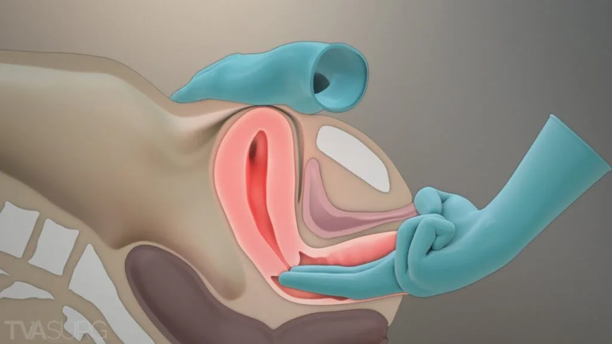

Expanded Nursing Uganda Explanation
Pelvic assessment should be reviewed through safe maternal and newborn assessment, early recognition of danger signs, respectful communication and timely referral. Connect the definition to vital signs, bleeding, fetal or newborn wellbeing, patient education and local protocol requirements.
01 Pelvic Assessment During Labor
A mother who is pregnant for the second time (Gravida 2, Para 1+0) reports with labor pains. Your task is to perform an internal pelvic assessment and create a plan for the mode of delivery .
02 Pelvic Assessment
Pelvic assessment is a process to determine whether a mother’s pelvis is wide enough for a baby to pass through safely during delivery .
03 Methods of Pelvic Assessment
- External Pelvic Assessment : This is a non-invasive assessment that can be performed by a midwife or healthcare provider. It involves observing the woman’s physical characteristics and taking a detailed history.
- Internal Pelvic Assessment : This is a more invasive assessment that requires a vaginal examination. It is typically performed by a doctor, especially during labor.
04 External Pelvic Assessment
The woman is observed/as she moves towards the HCW/ midwife, note the stature, gait and shape of the abdomen. Any mother with a pendulous abdomen is suspected of having a contracted pelvis.
1. Observation : Observe the woman as she approaches. Pay attention to her;
- Stature : Observe the woman’s height and build. A woman with a shorter stature might have a smaller pelvis.
- Gait : Observe how the woman walks. A waddling gait can indicate a wider pelvis.
- Abdomen : Observe the shape of the abdomen. A pendulous abdomen (protruding belly) can suggest a contracted pelvis
2. History Taking :
- Social History : Age :
- Under 18 years may indicate an immature pelvis with smaller diameters.
- Over 30 years may suggest that the pelvic joints are less flexible due to ossification, making labor more difficult. Tribe : Some tribes are known to have smaller or larger pelvises, which can influence delivery outcomes.
- Medical History : Ask if the mother has had diseases like poliomyelitis or rickets , which can affect the pelvis’s shape and size.
- Surgical History : Inquire about any accidents or surgeries involving the spine, pelvis, or lower limbs, as these may lead to a contracted pelvis.
- Past Obstetrical History :
- This is especially important for mothers who have been pregnant before (multigravida).
- Ask about previous deliveries : Were they normal or assisted?
- Ask about the condition of babies at birth : This can help rule out obstructed labor.
- Ask about the baby’s health : This can help rule out mental retardation, which could be a result of abnormal labor.
- Ask about the baby’s birth weight : This gives an idea of the size of baby that can pass through the pelvis without complications.
3. General Examination :
- Shoe Size : A woman wearing a smaller shoe size (size 4 or less) might have a smaller pelvis.
- Size of Hands and Feet : Smaller hands and feet can indicate a smaller pelvis.
- Height : A woman shorter than 152 cm might have a smaller pelvis that may not allow an average-sized baby to pass through.
05 Internal Pelvic Assessment
Internal pelvic assessment is usually done around 36 weeks of pregnancy for first-time mothers (primigravida) or by a midwife during labor . This assessment helps determine if the pelvis can accommodate the baby during delivery.
06 Scenario
A mother who is pregnant for the third time (Gravida 3, Para 1) arrives with labor pains. Your task is to perform a pelvic assessment to evaluate pelvic capacity.
Objectives
- Prepare the necessary equipment for an internal pelvic assessment.
- Conduct the internal pelvic assessment for the mother in labor.
Requirements
- A pack containing Two receivers A gallipot of sterile swabs Clean pad, Antiseptic lotion, Sterile gloves, Sterile bowl for lotion, Clean gloves, Lubricant, Mackintosh and draw sheet. At the bedside Screen Hand washing equipment Bedpan
NOTE: Measure the length of your fingers from the curve of the thumb to the middle finger, to measure the diagonal conjugate.
07 Procedure
- Step Action Rationale
- 1 Explain the procedure to the mother using soft skills. To ensure the mother understands and feels comfortable.
- 2 Ask the mother to empty her bladder and provide privacy by screening the bed. To allow accurate assessment and maintain the mother’s privacy.
- 3 Put on clean gloves. To maintain hygiene.
- 4 Assist the mother into the dorsal position. To allow proper access for the examination.
- 5 Place the mackintosh and draw sheet under her buttocks. To provide a clean field.
- 6 Drape the mother. To create a sterile area for the procedure.
- 7 Remove gloves, wash hands, and put on sterile gloves. To prevent infection.
- 8 Observe the vulva. To rule out any abnormalities.
- 9 Swab the vulva. To prevent infection.
- 10 Lubricate the index and middle fingers of your dominant hand and insert them into the vagina , reaching under the symphysis pubis to feel for the sacral promontory . This must not be prominent /tipped as this will reduce the Anteroposterior diameter of the pelvic brim. To measure the diagonal conjugate.
- 11 Examine the sacral hollow , ensuring it is well curved , to allow proper rotation off the fetal head. To check if internal rotation of the fetal head is possible.
- 12 Feel the left and right greater sciatic notches . They should be wide and round. To assess the transverse diameter of the pelvic outlet.
- 13 Feel for the ischial spines ; they should be blunt and round, not sharp, not to reduce the diameters of the outlet. If prominent, it can cause obstructed labour. Prominent spines can obstruct labor.
- 14 Examine the subpubic arch ; it should accommodate two fingers with some space left. If the space is less, it may reduce the pelvic outlet diameter.
- 15 Place four knuckles between the ischial tuberosities. To measure the intertuberous diameter.
- 16 Clean the vulva, make the mother comfortable, and provide feedback. To ensure the mother knows her status.
- 17 Clear the surroundings and record findings. For follow-up and documentation.
Note: During labour, while performing pelvic assessment, also assess the station of the fetus. Stations indicate how far the fetus has descended into the pelvis and can be felt during a vaginal examination, especially at stations -3, -2, and -1.
08 Station Table:
- Station Measurement from the Ischial Spine Part of the True Pelvis
- -3 -5 cm Pelvic inlet or brim
- -2 -3.3 cm
- -1 -1.6 cm
- 0 0 Ischial spine
- +1 +1.6 cm Pelvic outlet
- +2 +3.3 cm
- +3 +5 cm
- The table represents fetal station measurements during labor, which describe the position of the fetus’s presenting part (usually the head) in relation to the maternal ischial spines.
- The ischial spines are bony protrusions in the pelvis and serve as a key landmark in determining the station.
Stations and their Significance:
Station 0: When the fetal head is at the level of the ischial spines, it is said to be at “0 station.” This is considered the midpoint, meaning the fetal head has engaged in the pelvis but hasn’t descended past the spines.
Negative Stations (-3 to -1): When the fetal head is above the ischial spines, it is in a negative station. The numbers reflect the distance in centimetres above the spines. For example:
- -3 Station: The head is 5 cm above the ischial spines, closer to the pelvic inlet.
- -2 Station: The head is 3.3 cm above the ischial spines, indicating descent but not yet engaged.
Positive Stations (+1 to +3) : When the fetal head is below the ischial spines, it is in a positive station. The numbers reflect the distance in centimetres below the spines:
- +1 Station : The head is 1.6 cm below the ischial spines.
- +3 Station : The head is 5 cm below the ischial spines, nearing the pelvic outlet, indicating significant descent and progress toward delivery.
09 Nursing Uganda Clinical Lens
Use Pelvic assessment as a practical nursing topic, not only a memorized definition. Read the topic through the safety of two patients: the mother and the fetus or newborn.
- What to understand first: define pelvic assessment, identify the normal or expected pattern, then explain what changes when the patient is unwell.
- Why it matters in care: the nurse must recognize risk early, explain findings clearly, document accurately and know when to escalate.
- How to revise it: connect each point to assessment, nursing diagnosis or care problem, intervention, rationale and evaluation.
10 Assessment Guide
- Maternal vital signs, bleeding, pain, contractions, uterine tone and danger signs.
- Fetal or newborn wellbeing, feeding, temperature, breathing and activity.
- History of pregnancy, parity, medications, allergies, investigations and referral risks.
11 Nursing Priorities, Rationales and Outcomes
- Recognize danger signs early and escalate without delay.
- Provide respectful communication, privacy, infection prevention and clear documentation.
- Teach the mother what to monitor at home and when to return urgently.
The rationale for these priorities is patient safety: nursing actions should prevent deterioration, reduce discomfort, support recovery and create clear evidence for the next caregiver.
- Expected outcome: Mother and baby remain stable, danger signs are acted on early, and the family understands follow-up instructions.
12 Patient Teaching and Revision Check
- Explain pelvic assessment in simple language the patient or caregiver can repeat back.
- Teach warning signs, medicine or follow-up instructions, hygiene or lifestyle points where relevant.
- For exams, prepare a short answer using: definition, causes or risk factors, signs, assessment, management, complications and prevention.
- For ward practice, document baseline findings, actions taken, patient response and the plan for review.
Illustrations and Diagrams (1)

Related Video Lectures
Watch nursing lecture videos on YouTube for this topic. Opens in a new tab.
Watch on YouTubeExternal link: YouTube may use its own cookies and terms. Nursing Uganda is not affiliated with YouTube.